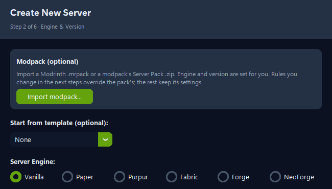
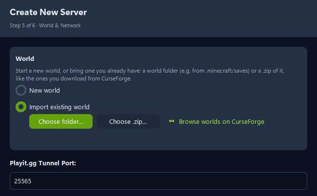
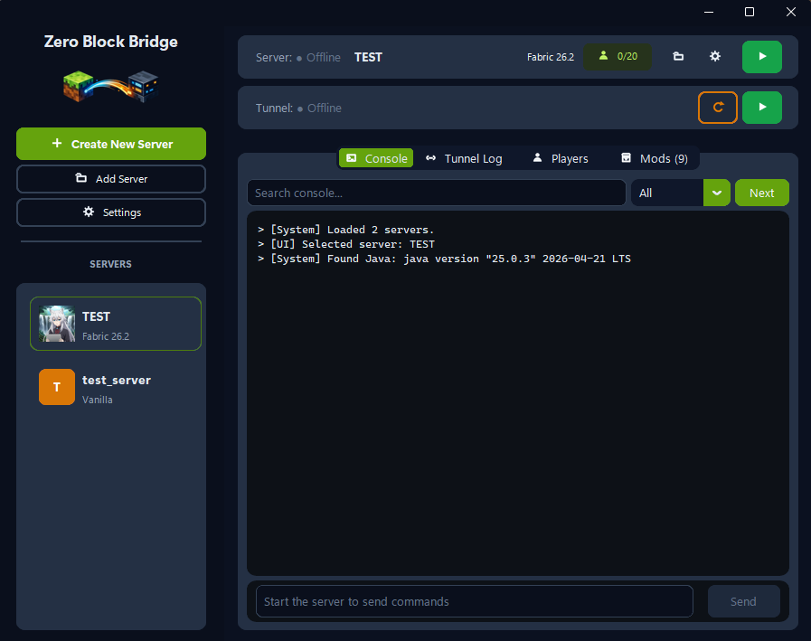
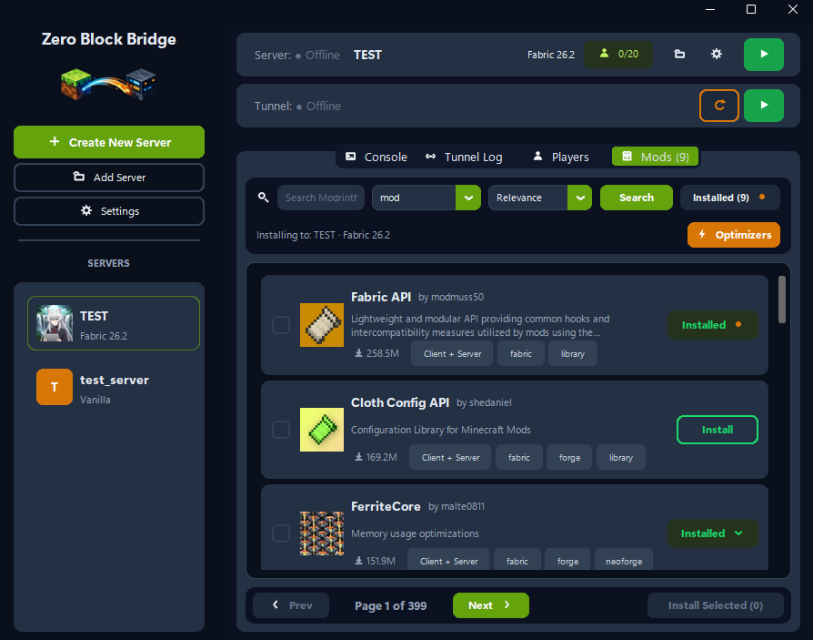

ZeroBlockBridge
Host a Minecraft server for your friends from your own PC. Bring a modpack or a world, and share an address that works without port forwarding.
Making Minecraft server self-hosting easy
Click to reveal
Host a Minecraft server for your friends from your own PC. Bring a modpack or a world, and share an address that works without port forwarding.
Making Minecraft server self-hosting easy
Click to reveal
Server creation
The creation wizard reads a Modrinth .mrpack or a modpack's Server Pack and sets the engine,
the Minecraft version and the exact loader build for you. Mods and configs install while the server is built.
On the world step, bring a save from .minecraft/saves or a world .zip downloaded from CurseForge.


Running it
Everything a small server needs day to day, in one window and without a terminal.
A built-in Playit.gg tunnel gives the server a permanent public address. Share it and your friends can join.
ZBB works out which Java the server needs, from Java 8 up to Java 25 for Minecraft 26.x, and installs it next to the app. Your system Java is left alone.
A watchdog restarts a crashed server with backoff, detects a frozen one and flags lag spikes. Each crash is saved as a report.
Search and install mods and plugins from Modrinth with their dependencies. Every update takes a full snapshot first, so a bad one is a single restore away.
Whitelist, operators, bans and kicks in one Players tab, with skin heads, last seen and playtime. The header shows uptime, RAM use and who is online.
Scheduled, manual and pre-update backups are kept apart, so rotating automatic ones never deletes yours. Restore or delete each one with a click.
Commands are matched against an allowlist before they reach the server. If one is blocked, a notice says which command and why.
Keep a server per modpack or per group of friends. You can open and configure any of them while another one is running.
Also included: server templates, .zbbpack export to move a server to another PC,
Discord notifications, closing to the system tray while servers keep running, and light, dark or system theme.
The app


Getting started
Run the download and choose Install on this PC. No admin rights needed. You get Start menu and Desktop shortcuts and an uninstaller in Windows Settings. Prefer a single folder? Pick Portable.
Pick an engine and a version, or import a modpack. Set RAM, game rules and the world, then review everything on one summary page before ZBB builds it.
Press Start. ZBB accepts the EULA, launches with tuned JVM flags and opens the tunnel. Copy the address and send it to your friends.
Download
Free and open source under AGPL-3.0. Windows 10 and 11, with an experimental Linux build. No Python needed.
.sha256.git clone https://github.com/DesvoSoft/ZeroBlockBridge.git cd ZeroBlockBridge pip install -r requirements.txt py app/launcher.py